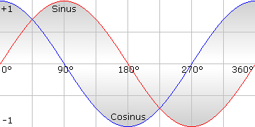
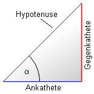

Hilfe
ACos


Aufruf
Parameter
Rückgabewert
Beschreibung
Beispiel
Siehe auch
Winkel#= ACos# (Zahl#)
Parameter
| Zahl | eine beliebige Zahl, die zwischen -1 und 1 liegen muss |
Rückgabewert
Kleinster Winkel in Grad.

Beschreibung
Diese Funktion berechnet den Winkel aus einem Cosinuswert. Es ist somit die Umkehrfunktion für Cosinus. Mathematiker nennen es ArcusCosinus.
Man kann den Cosinuswert ausrechnen, indem man die Ankathete eines rechtwinkligen Dreiecks durch die Hypotenuse teilt. Aus diesem Wert wird danach der Winkel berechnet.
Zur Erklärung: Ankathete ist die Seite des Dreiecks, die neben dem gesuchten Winkel liegt. Hypotenuse ist die Seite mit der größten Länge.

Beispiel
In diesem Beispiel wird die Winkelberechnung mit ACos demonstriert
Graphics 640,480
Repeat
Cls
x# = MouseX()
y# = MouseY()
r# = Sqr((x#*x#)+(y#*y#))
Color 104,104,104
Line x#,0,x#,y#
Line 0,y#,x#,y#
Locate x#+10,y#-10 : Write "X=" : Print x#
Locate x#-10,y#+10 : Write "Y=" : Print y#
Origin 0,0
Color 255,255,255
Line 0,0,x#,y#
theta# = ACos(x#/r#)
Locate 60,10 : Write "Winkel:" : Print theta
For degrees#=0 To theta#
cy=Sin(degrees#)*50
cx=Cos(degrees#)*50
Plot cx,cy
Next
Flip
Until KeyDown(1)
Repeat
Cls
x# = MouseX()
y# = MouseY()
r# = Sqr((x#*x#)+(y#*y#))
Color 104,104,104
Line x#,0,x#,y#
Line 0,y#,x#,y#
Locate x#+10,y#-10 : Write "X=" : Print x#
Locate x#-10,y#+10 : Write "Y=" : Print y#
Origin 0,0
Color 255,255,255
Line 0,0,x#,y#
theta# = ACos(x#/r#)
Locate 60,10 : Write "Winkel:" : Print theta
For degrees#=0 To theta#
cy=Sin(degrees#)*50
cx=Cos(degrees#)*50
Plot cx,cy
Next
Flip
Until KeyDown(1)
Siehe auch